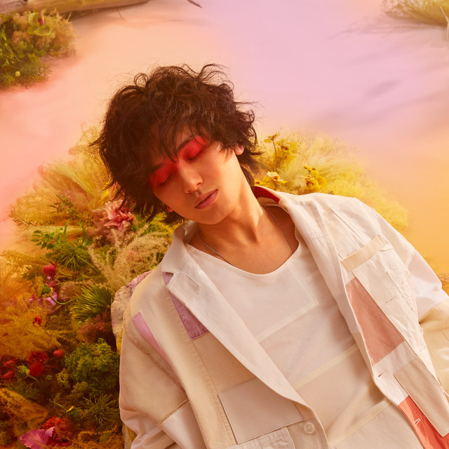

Together with producer Yaffle, they've made the most popular songs in japan of today
Fujii Kaze
LOVE ALL SERVE ALL
Released March 2022
-
Awards:
- "Red Prize" for "LOVE ALL SERVE ALL" at CD Shop Awards 2022
- "Best Visual Effects" for "Damn" at MTV Video Music Awards Japan 2022
- "Best Solo Artist" at Space Shower Music Awards 2022
Love All Serve All is another solid offering from Kaze Fujii, who has once again let us know that he is one to watch with a talent that will carry him all the way. Japanese music has seen a really cool influx of newer talent who manage to straddle the line between old and new, traditional and non-traditional; and Kaze is one of those talents. There’s everything here for local Japanese music listeners to latch onto, but there is also clear appeal for Western audiences too. But the thing is, Kaze is not even trying to have Love All Serve All be this perfect balance or represent any form of intersection. This album is just a reflection of who Kaze is, the music he’s into and his influences.


-
Side One
- Kirari
- Matsuri
- Hedemo Ne-Yo - LASA edit
- YABA
- MO-EH-YO (Ignite)
- Garden
-
Side Two
- damn
- Lonely Rhapsody
- Bye for now,
- "Sheishun-Sick"
- Tabiji
In December of 2022, the nationwide arena tour "Fujii Kaze Love All Arena Tour" ;16 shows in 8 cities throughout Japan, attracting a total of 210,000 people
The singer/songwriter in his studio
Fujii's performance is broadcasted on Netflix globally as "Fujii kaze Love All Serve All Stadium Live"
HELP EVER HURT NEVER
Released May 2020
-
Awards:
- "Blue Prize" for "HELP EVER HURT NEVER" at CD Shop Awards 2021
- "Best Conceptual Video" for "Sheishun-Sick" at Space Shower Awards 2021
- "Best New Asian Artist Japan" at MAMA Awards 2020
Categorising the sound of Help Ever Hurt Never is difficult. Filing it under pop is easiest, but it robs the album of the diversity in sound that it does explore and the way that some songs present fusions of sounds which aren’t pop whatsoever. The album kicks off with “Nan-Nan”, which could be seen as a pretty typical J-Pop song, but as the album progresses it then starts to morph into something which feels far less typical.It’s intriguing, especially when the music is this good and displays this level of variety, because there’s no telling where Kaze could go from here, and that in itself is exciting.

-
Side One
- Nan-Nan
- Mo-Eh-Wa
- YASASHISA
- Kiri Ga Naikara
- Tsumi No Kaori
- Cho Si Noccha Te
-
Side Two
- Tokuninai
- Shinunoga E-Wa
- Kazeyo
- SAYONARA Baby
- Kaerou
Since July 2022, Fujii got global attention with his song from Help Ever Hurt Never, "Shinunoga E-Wa", going viral on TikTok. The song reached #4 on Spotify’s Global Viral chart, and n Spotify’s Global Song chart, it reached #57 , despite the song being originally released in 2020.
At 12 years old, Fujii started uploading covers on Youtube, amassing more than 30 million views.
Fujii Kaze on his Youtube channel.
Fujii released his debut single, "何なんw (WTF LOL)" on November 18,[7] 2019.